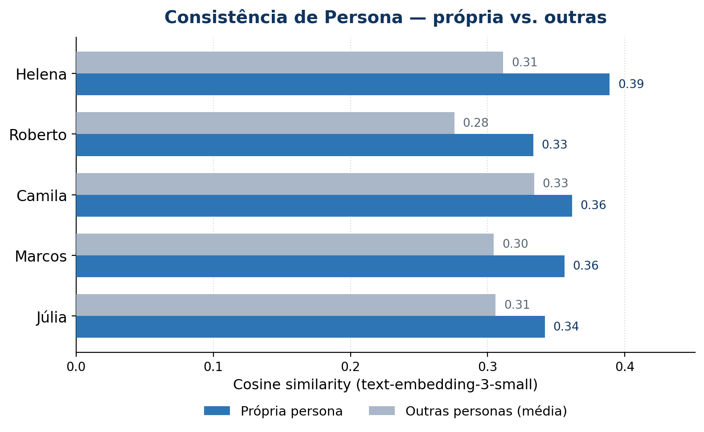
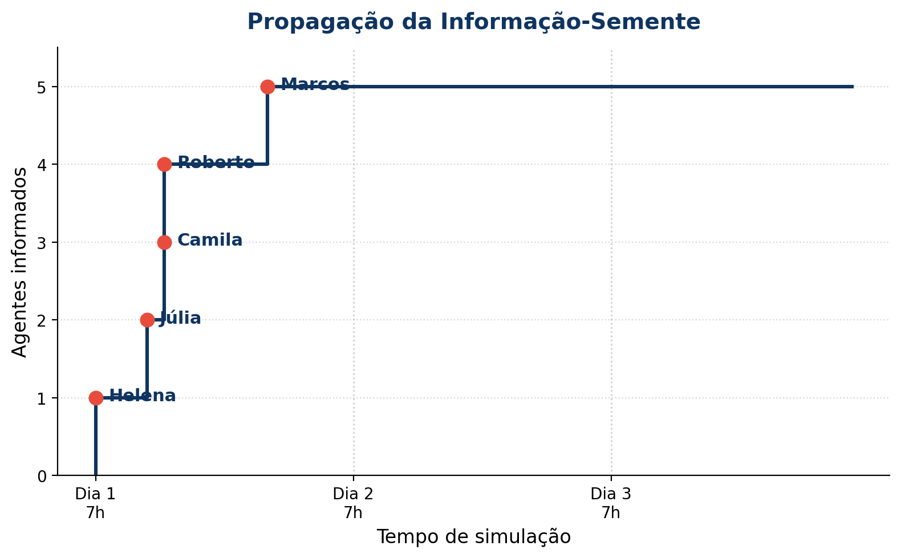

Replicando Emergência Social em Escala Reduzida com LLMs
Breno da Barra Figueira · Luiza Abrahão Pedroso · Milena Capelli Santos ·
Pedro Beresford Rocha · Victor Gabriel Accorsi Amorim
Pontifícia Universidade Católica de Campinas — PUC-Campinas ·
Tópicos em Engenharia de Software (12463) · 1º Semestre 2026 · Grupo G7
1Contexto e Motivação
Simulações sociais com agentes generativos usam LLMs para criar agentes
autônomos que convivem, acumulam memória e interagem num ambiente
compartilhado. O paper Generative Agents (Park et al., 2023) mostrou
que 25 agentes produziram comportamentos emergentes — organizar festas,
formar amizades — sem programação explícita. Investigamos se essa
emergência se mantém em escala reduzida (5 agentes, 3 dias).
2Conceitos-Chave
Memory Stream. Fluxo contínuo de observações, reflexões e planos, com timestamp e score de importância.
Recuperação por Relevância. Memórias buscadas por recência × relevância × importância via embeddings.
Reflexão. O agente sintetiza memórias recentes em insights de alto nível ("Roberto parece solitário").
Planejamento Diário. Agenda de atividades do dia, coerente com a persona e experiências recentes.
Persona. Biografia, traços e objetivos que definem a identidade e o comportamento do agente.
Emergência Social. Comportamentos coletivos que surgem da interação, sem terem sido explicitamente programados.
3Estado da Arte
2023
Generative Agents (UIST) · 25 agentes AI Town (a16z)
2024
1.000 People Project Sid · civilização de muitos agentes
2025
AgentSociety framework open-source simulação em larga escala
Trabalho
Ano
Agentes
Destaque
Generative Agents
2023
25
Arquitetura seminal (memória + reflexão + plano)
AI Town
2023
~10
Starter kit open-source (TS/Convex)
Project Sid
2024
1000+
Civilização com governança emergente
AgentSociety
2025
200+
Framework p/ simulação social em escala
Nosso projeto
2026
5
Validação de emergência em escala mínima
4Arquitetura & Método
Cada agente tem quatro módulos conectados ao LLM: persona
(identidade fixa), memória (fluxo recuperável de observações),
reflexão (síntese periódica) e planejamento (agenda
diária). O ambiente simula uma vila com locais onde os agentes se
encontram e conversam.
Recuperação de memória pontua cada entrada por
recência × relevância × importância;
a reflexão dispara por acúmulo de importância.
5Experimento & Demo
Nº de agentes
5
Dias simulados
3
Horas por dia
15 (7h–21h)
LLM
GPT-4o-mini
Info-semente
Feira de artesanato no sábado

Própria persona > outras em 5/5 agentes

Propagação da info-semente no tempo
☕ Café Aurora — Dia 1, 11h · conversa gerada por GPT-4o-mini
Helena: Camila, você soube que vai ter uma feira de artesanato na praça no próximo sábado? Vai ser uma delícia!
Camila: Não sabia! Que legal! Vai ter muita coisa? Estou precisando de novas inspirações para minhas pinturas.
Helena: Ah, com certeza! Vão ter artesãos de toda a vila — até as cerâmicas lindas do Joaquim.
Camila: Que ótimo! Vou passar lá, então. Espero que as pessoas sejam receptivas, ainda estou tentando me enturmar por aqui.
6Discussão e Limitações
O que funcionou
Cada agente ficou mais similar à própria persona que às outras (5/5; Δ +0,05) — personas distinguíveis
Info-semente propagou via conversas até 100% dos agentes já no Dia 1
Reflexões geraram insights coerentes com as experiências
Modo mock garante reprodutibilidade sem custo de API
Limitações
5 agentes limitam a diversidade de dinâmicas sociais
Modo mock produz conversas menos ricas que o LLM
Sem GUI, a análise depende de logs textuais
Custo de API acumula (~US$0,50 por simulação completa)
Próximos passos: escalar para 15–20 agentes e observar formação de
subgrupos; adicionar visualização 2D inspirada no Smallville original.